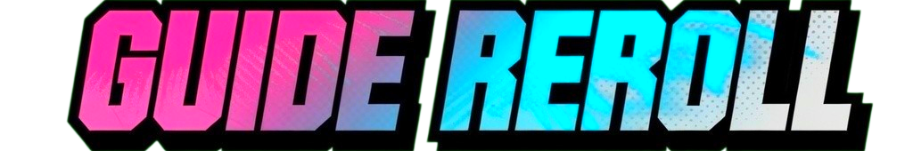
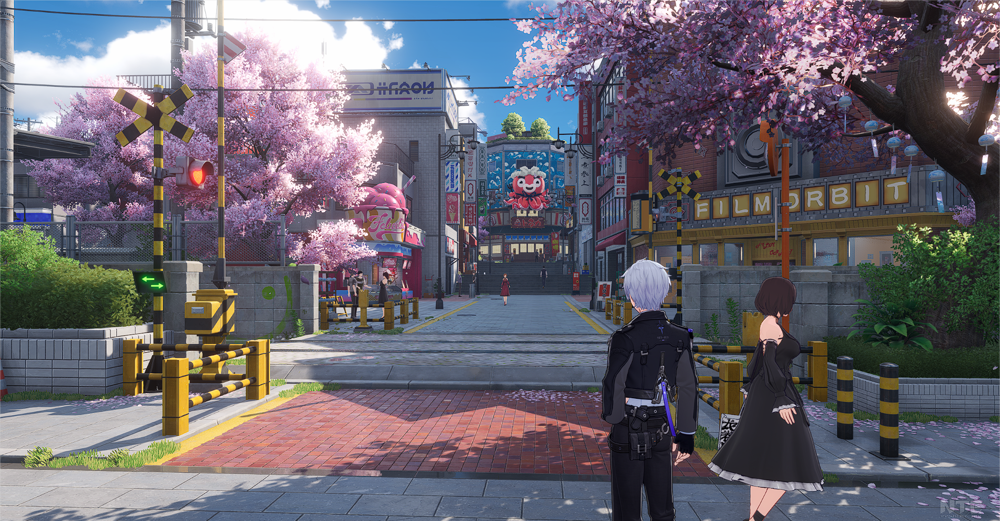
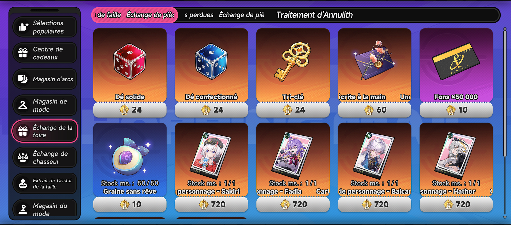

Avant toute chose : Il n'est pas forcémennt nécessaire de reroll dans NTE.
Alors oui, si vous voulez obtenir un ou plusieurs espers en particulier pour commencer le jeu vous pouvez toujours le faire évidemment. Mais en soit le jeu est moins punitif (pour le moment?) concernant la composition de base de votre équipe. Zero, notre personnage est plutôt bon pour le moment.
Le jeu offre pas mal de choses dés le début et vous permet d'avoir au minimum un esper de rang S en 50 tirages voir deux :
Plus d'infos sur le système de tirage ? Je vous laisse aller voir le Guide Gatcha :
Comme dans beaucoups de jeu de Gatcha, pour reroll vous devrez créer un nouveau compte à chaque foi. Il faut ensuite finir l'introduction du jeu (Bon vous pouvez skip une grosse partie des cinématiques), ce qui devrait prendre entre 15 et 20 minutes.
Vous n'avez pas besoin d'aller jusqu'à votre lieu de résidence pour pouvoir avoir accès aux tirages. Quand vous arrivez en ville avec Menthe et que vous sorter du véhicule, vous pourrez alors y avoir accès en ouvrant le menu principal et récupérer vos récompenses et/ou les codes d'échange

Å ce moment là du jeu, avec un nouveau compte, vous devriez avoir en votre possession :
On rajoute à ça la possibilité de racheter des tirages avec les pièces perdues ou de failles (Plus ou moins la monnaie pity du jeu) qui se trouve dans la boutique "Échange de la foire".
Les pièces perdues vous permette de les échanger contre maximum 5 dés solides (rouges) et 5 dés fabriqués (bleus).

Content de vos tirages ? Continuez à jouer ou alors déconnectez-vous et recommencer !